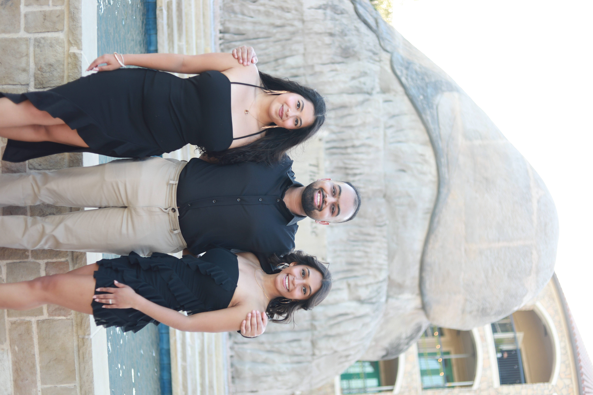
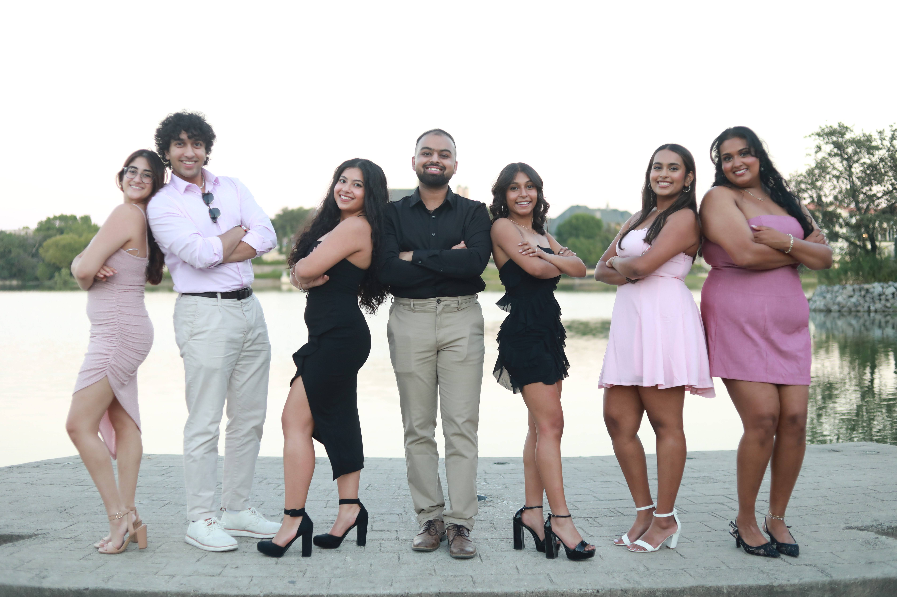
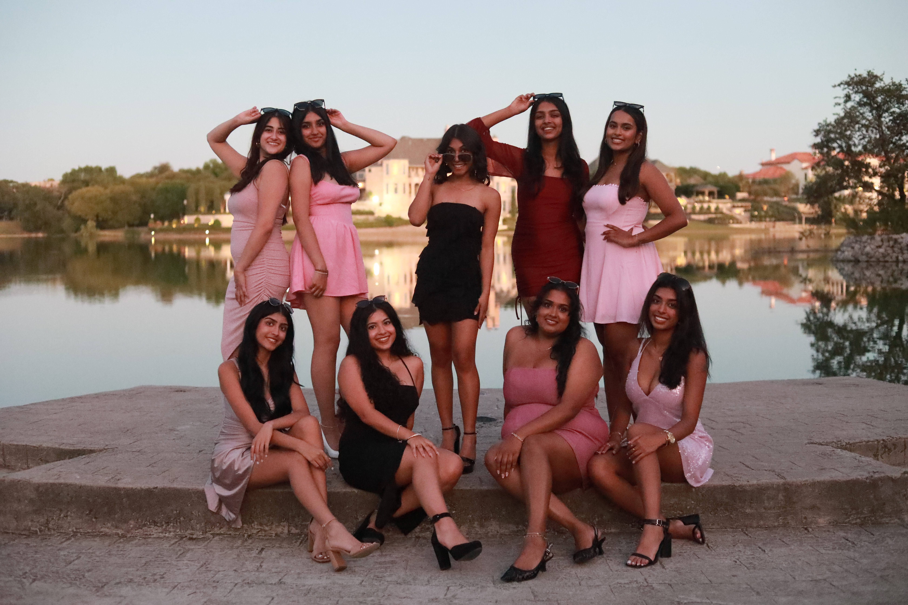
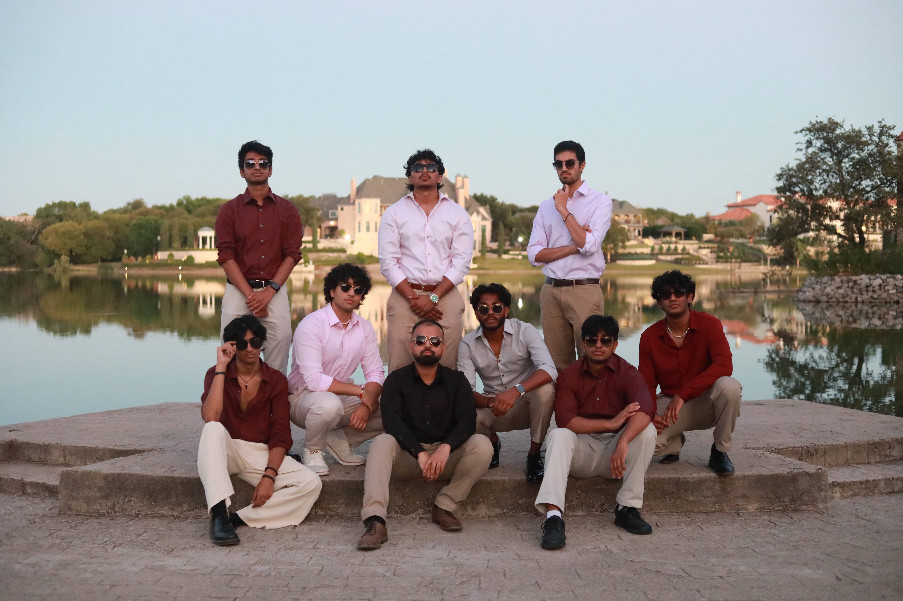
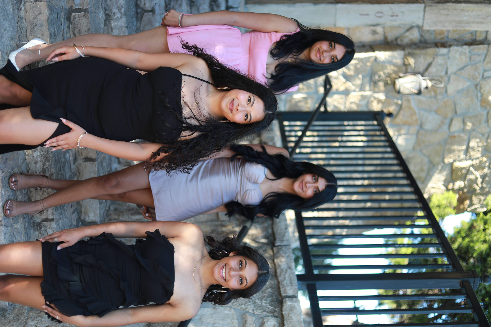
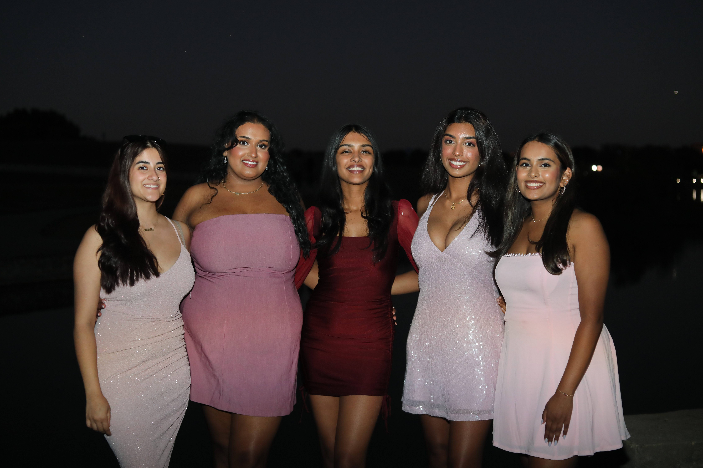
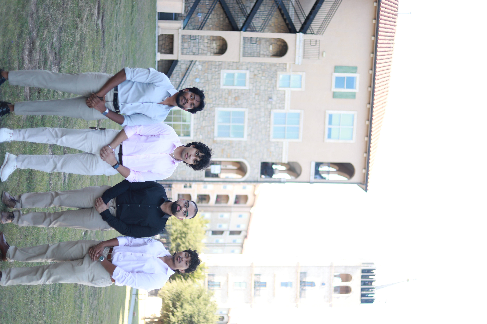
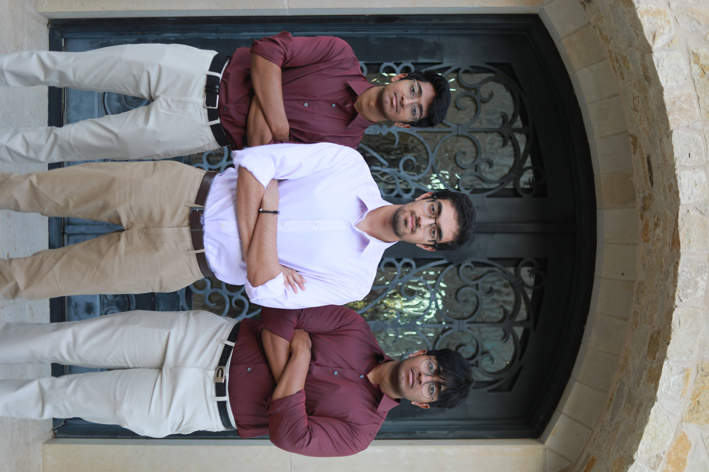

Soprano
I’m Anoushka and I’m one of the captains of Dhunki. I’ve been on Dhunki for 4 years, and I’m graduating in December with a bachelor’s degree in Finance. After graduating, I’ll be working full-time in Chicago at PwC! Aside from Dhunki, I’m involved in several other on-campus organizations such as the Professional Program in Finance, UTD Akshaya Patra, the Investment Management Club, and most recently the French club! In my free time, I love to watch Law & Order, read, or play Super Smash Bros with my friends.
Soprano
Hi, I’m Devanshi one of the captains of dhunki!! This is my third year on the team and I am a biology major with a music minor. For my musical background, I have my Visharad degree in Hindustani classical music and was in choir throughout school. Aside from Dhunki, I am a part of FeelGood and Awaazein. In my free time I love dancing, gymnastics, and working out. My favorite part of being on the team is traveling with everyone. I am super excited for this year’s comp season!
Tenor
Hey guys! My name is Shashank and I'm a Biology major on the pre-med track. This is my fourth year on Dhunki and my second year as Captain. Musically, I've been singing Carnatic and playing the piano for the past 15 years. When I'm not at Dhunki, I spend time with my German Shepard, watch movies and sports (MFFL), work out, and play basketball. I can't wait for the upcoming year and competition season to add lifelong memories alongside a great group of people!
Alto
Hey! My name is Ananda and I'm a senior majoring in Economics! This is my third year on the team and second year on exec as Finance Director! I'm so excited to travel to new places this year and compete with a completely new set. I played piano growing up and was in choir all throughout school. In my free time I love binge watching Doctor Who, any crime series, or Ben 10 - there really isn't an in between.
Tenor
Hi! My name is Tanav and I am a junior neuroscience major on the pre-medical track. I am the music director for Dhunki and have been on the team for three years. I also have been singing and playing various instruments for the past 16 years. Some of my hobbies include powerlifting, trying new foods, and playing basketball.
Alto
Hey! I’m Varsha, a sophomore majoring in ITS. This will be my second year on Dhunki. My musical background is in Carnatic music, and I've also been trained in film music! One of my favorite memories from this past year was traveling to comp, and I’m so excited for this new season.
Alto
Hi I'm Nidhi and I'm a senior majoring in Finance. This is my second year on the team and I am also the Creative Arts Director! I'm really excited to see what the competitive season brings us this year!
Soprano
Hi, I’m Siya, a molecular bio major on the pre-med track! I’m currently a freshman, and it’s my first year on the team. I’ve had both choral and pop training for 10 years now, and I am stepping into something new by singing South Asian music with Dhunki! Other than singing, I love occupying my time by playing video games, cooking, painting, and playing with my dog Rocky. I can’t wait for a great season this year!
Soprano
Hi! My name is Vyshnavi, and I am a junior neuroscience major on the premed track! This is my second year on Dhunki. I’m so excited to learn and perform our set for comp season! I love trying new food places and watching horror movies in my free time.
Alto
Hey guys, I’m Anjali and I’m a freshman comp sci major! I’ve been learning classical Indian vocal for 13 years now and recently picked up guitar. This is my first year on Dhunki and I’m super pumped for comp season and meeting new friends! In my free time you can catch me hiking new trails or watching reruns of modern family!
Alto
Hello! My name is Sindhu and I’m a sophomore majoring in Healthcare Studies and minoring in exercise science on the pre-med track! This is my first year in Dhunki and I have been singing Carnatic music for 14 years and was in choir for 8. I’m so excited for this new team, and making the best of memories all over the country with the most amazing people! In my free time, I love working out or playing volleyball, football, or pickleball.

Bass
Hey, I'm Jonny! This is my second year on Dhunki and I'm so excited to compete again this year! When I'm not at Dhunki, you'll find me competing with the school's dance team, Raftaar. I'm also on the pre-med track and heading off to medical school next year!
Tenor
Hello! My name is Kevin and I am a senior at UTD studying Information Technology & Systems. In terms of my past music experiences, I learned carnatic music for a couple years in elementary school and besides that, have learned singing/a cappella by ear. This is my 4th year on Dhunki, and I am incredibly excited to compete, travel, eat and pull all-nighters with the team! When I’m not with my fellow Dhunkids, you can find me cutting hair for my business or riding my longboard around campus!
Baritone
Hi! My name is Akash and I am a junior studying computer science! This is my first year on Dhunki and I have been learning Carnatic music for over 10 years. I am an aspiring musical artist as well and hopefully you’ll find me on Spotify soon. In my free time I love playing basketball or watching anime or Netflix.
Baritone
Heyo, my name is Sahil Lalani and I’m a newbie on Dhunki for the 2024 year! I’m a sophomore majoring in business admin with a concentration in entrepreneurship and innovation and I’ve been singing infront of people my entire life. I’m big into fashion, content creation, startup companies, photography, film, modeling, FOOD, and obviously singing!! I am so excited to be a part of Dhunki and can’t wait for comp season.
Bass
Hi, I'm Ashwin Krishnan and I'm a senior Biomedical Engineering major. This is my third year on the team.
Bass
Hi, I’m Arjun Krishnan and I’m a freshman at UTD. I am majoring in Computer Science and this is my first year in Dhunki.
Beatboxer
Hello! I'm this year's beatboxer, Pranav. I am a senior and this is my first year on the team!